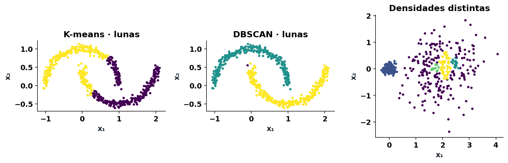
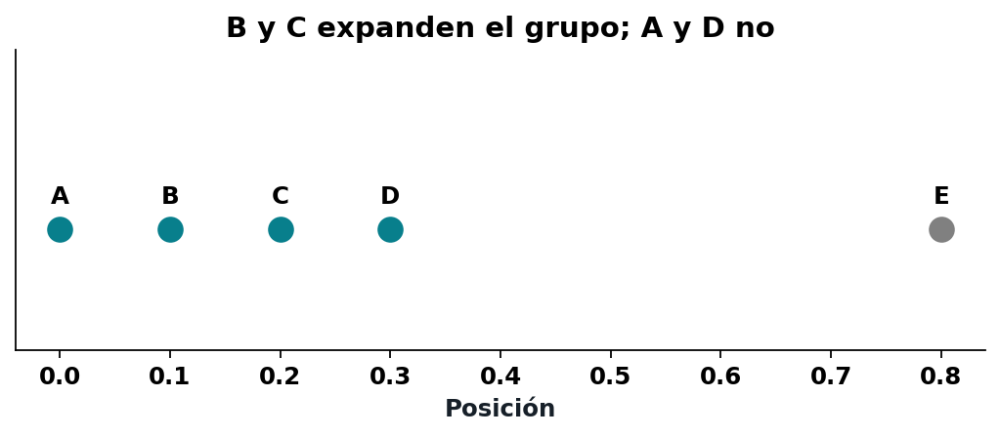
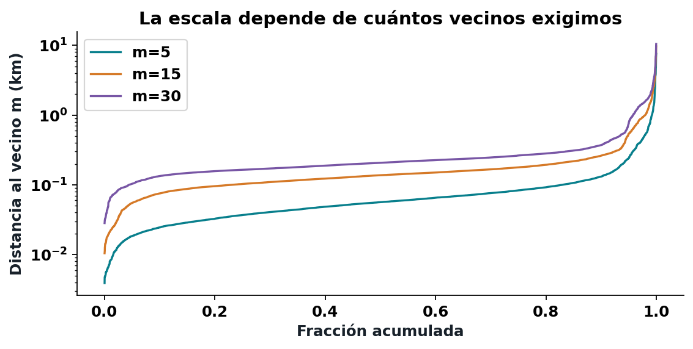
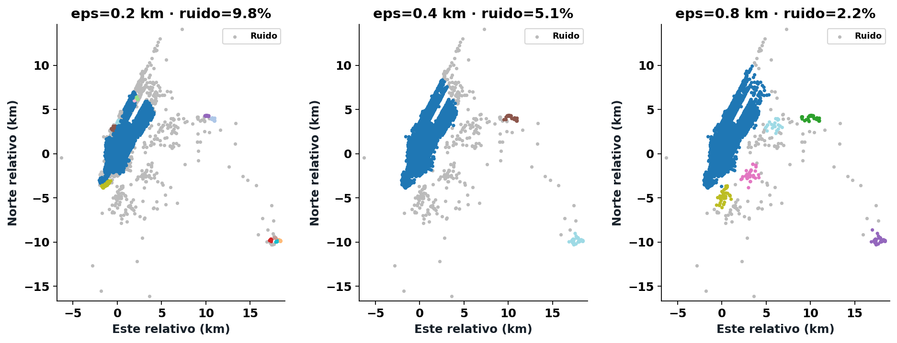
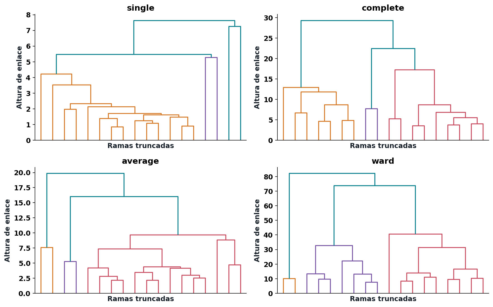

DBSCAN: agrupamiento basado en densidad
Semana 8 · 18 de septiembre de 2026

Experimentos sintéticos: formas no convexas y densidades distintas.
N_\varepsilon(p)=\{q:d(p,q)\leq\varepsilon\}
Aquí d se mide en kilómetros.
El propio punto pertenece a su vecindad.
|N_\varepsilon(p)|\geq m
Núcleo: cumple el conteo.
Frontera: no cumple, pero toca un núcleo.
Ruido: no cumple ninguna de las dos condiciones.
q está en la vecindad de p y p es núcleo.
Un núcleo puede alcanzar una frontera.
Una frontera no expande el grupo desde sí misma.
Una sucesión de pasos desde núcleos permite alcanzar puntos lejanos.
Dos puntos están conectados por densidad si existe un origen que alcanza a ambos.
Una frontera puede tocar dos componentes de núcleos.
No las fusiona.
Su asignación puede depender del orden de recorrido.

eps = 0,115; min_samples = 3; el propio punto cuenta.
Mantenga eps = 0,115 y cambie m de 3 a 2.
¿Quién se vuelve núcleo?
¿El grupo debe cambiar?
\widehat f_\varepsilon(x)\approx\frac{|N_\varepsilon(x)|}{n\pi\varepsilon^2}
Umbral aproximado: m/(n\pi\varepsilon^2).
Cambiar n cambia la interpretación de m.
Con la mitad de observaciones y m fijo, hay menos vecinos.
Reducir m aproximadamente conserva un umbral.
La conectividad no queda garantizada.

El conteo incluye el propio punto a distancia cero.
eps: 0,1; 0,2; 0,4; 0,8; 1,6 km.
min_samples: 5; 15; 30.
Registrar grupos, tamaños, ruido y sensibilidad.

La muestra se mantiene fija; cambia eps.
eps = 0,1 km; m = 30:
Silhouette ≈ 0,84. Ruido ≈ 91,8 %.
¿A qué parte de los datos describe esa puntuación?
Todo ruido: no hay partición evaluable.
Un solo grupo: falta un grupo de comparación.
Registrar NaN y explicar; no reemplazar por cero.
Puede ser una recogida legítima poco frecuente, un efecto de muestra o un error.
DBSCAN no verifica cuál explicación es correcta.
GMM: componentes y pertenencias.
KDE: superficie de densidad.
DBSCAN: regiones conectadas a una escala.
Propongan dos zonas para estudiar y una ubicación para revisar.
Incluyan tres mapas y un experimento de sensibilidad.
Pueden concluir que hace falta información.
Observo → interpreto → recomendaría estudiar → vigilaría → no puedo concluir.

Refuerzo autónomo: cuatro enlaces sobre los mismos 500 puntos.